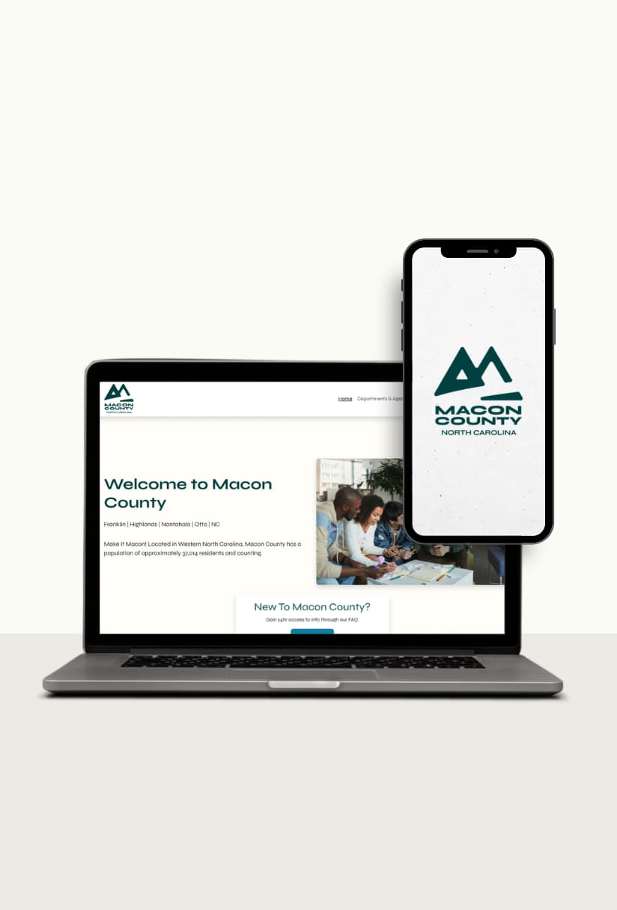
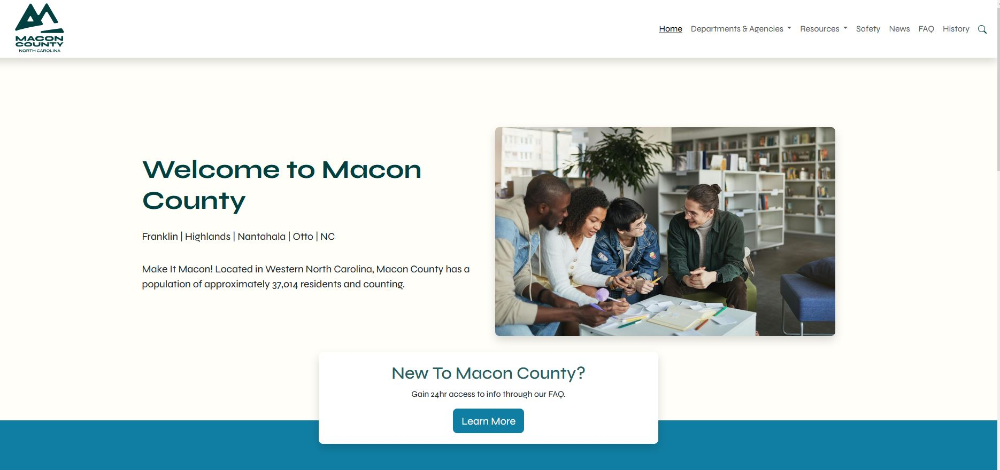
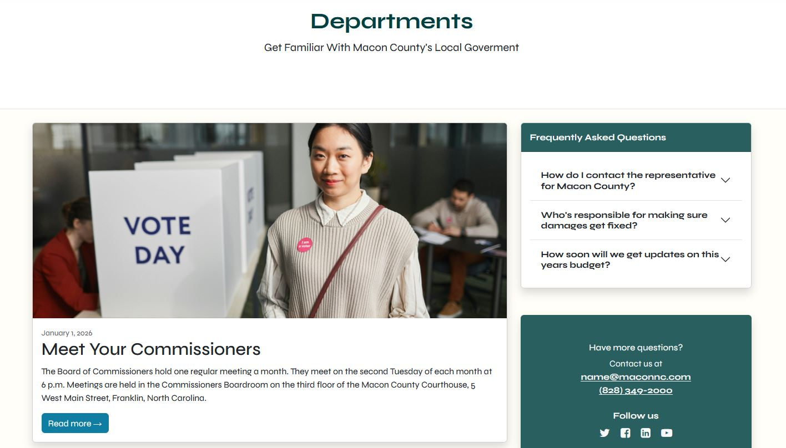
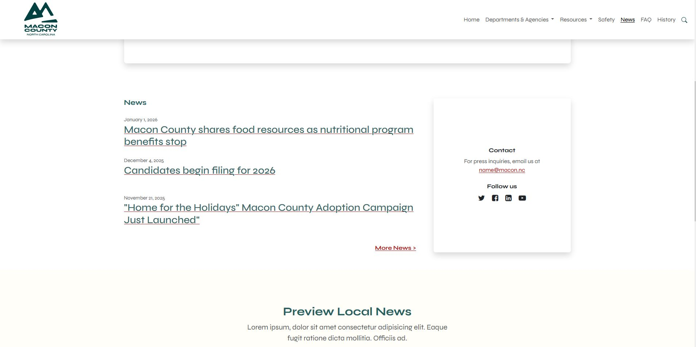

Macon County Case Study

Macon County
Case Study Details
For this project, I audited the Macon County government website and put together a full usability report with real, actionable recommendations. I looked at everything from how people move through the site to whether the content was actually readable, and found quite a few places where small changes could make a meaningful difference.
View Live SiteMacon County
Project Background
The Macon County site had the bones of something useful, but it just wasn't easy to actually use. Text got lost in images, the navigation felt like a maze, and on mobile it was nearly impossible to find what you were looking for. I wanted to document those pain points clearly and propose a real path forward.

Macon County
Observations & Insights
Spending time with the site made the problems pretty obvious. Text was placed directly on top of busy images, making it nearly unreadable. The nav bar was packed with links, many of them repeated. Department pages felt like walls of information with nothing to guide your eye. And on mobile, even basic tasks took more effort than they should.

Macon County
Recommendations
My recommendations focused on getting back to the basics of clear communication. Trim the navigation to what people actually need, bring in better imagery with proper descriptions, and give the mobile experience the attention it deserves. A consistent type scale and spacing system would also go a long way toward making the site feel like a whole, rather than a collection of parts.

Macon County
User Feedback
The feedback from users reflected a lot of the same frustrations I noticed during my review. Reading text was a struggle, especially on image-heavy pages. People felt overwhelmed by the navigation and weren't sure where things lived. Mobile users in particular felt like the site wasn't built with them in mind, which for a public government resource really does matter.